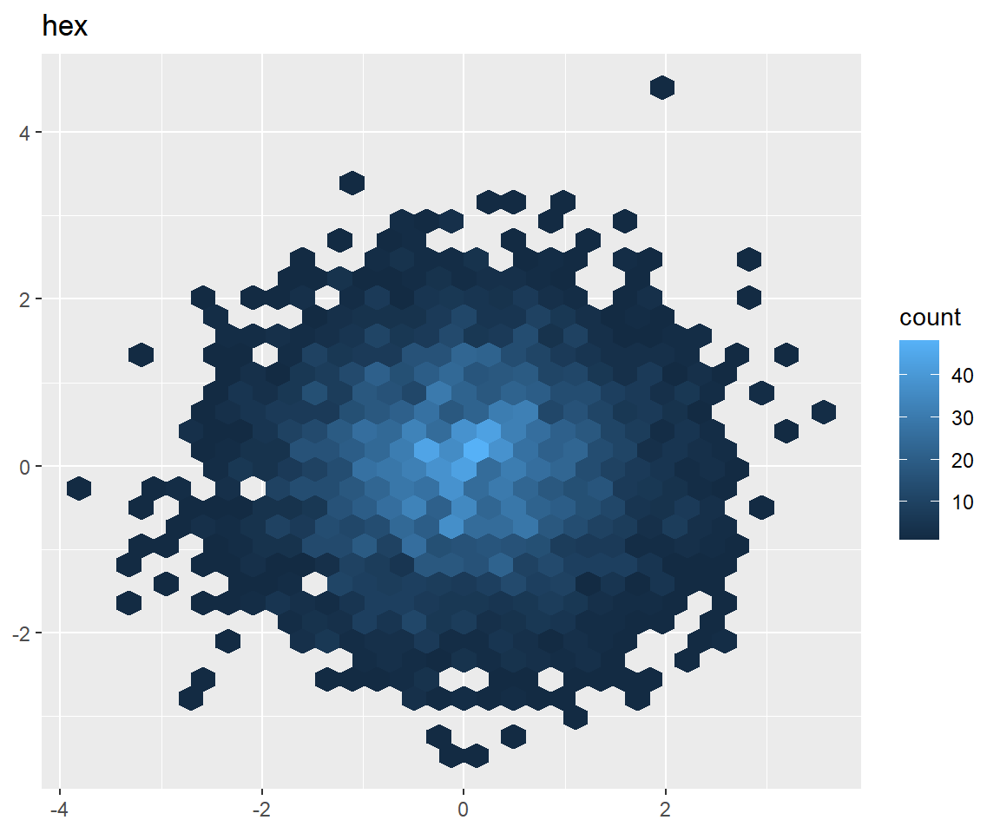
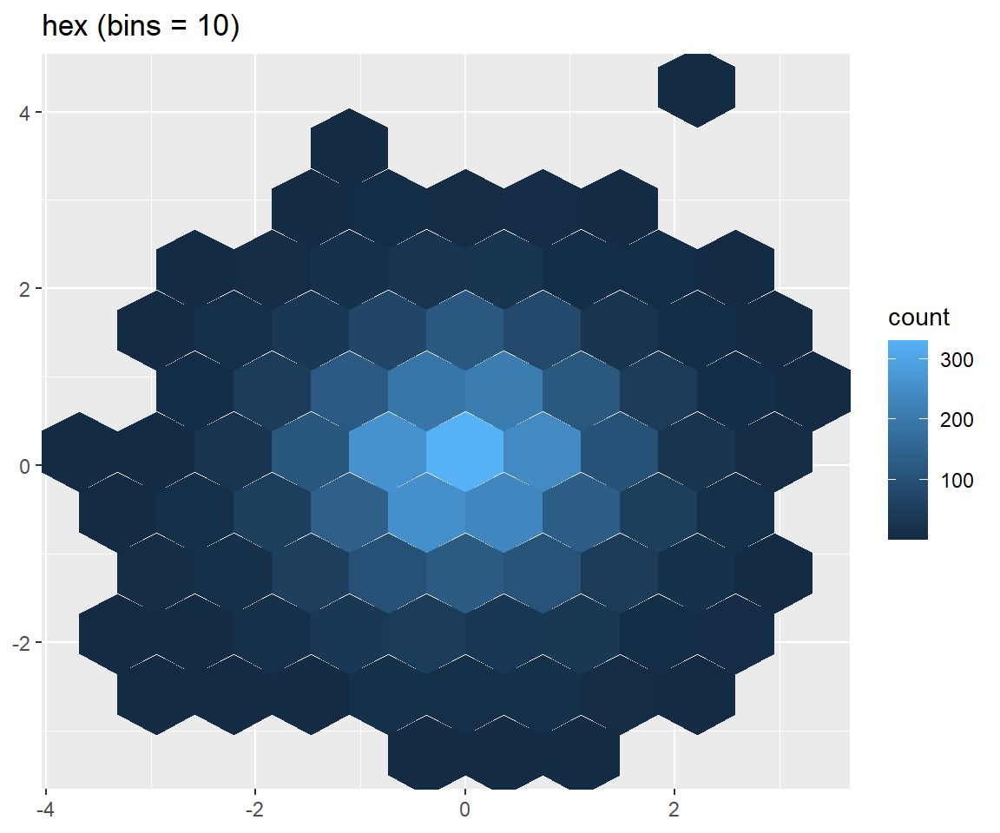
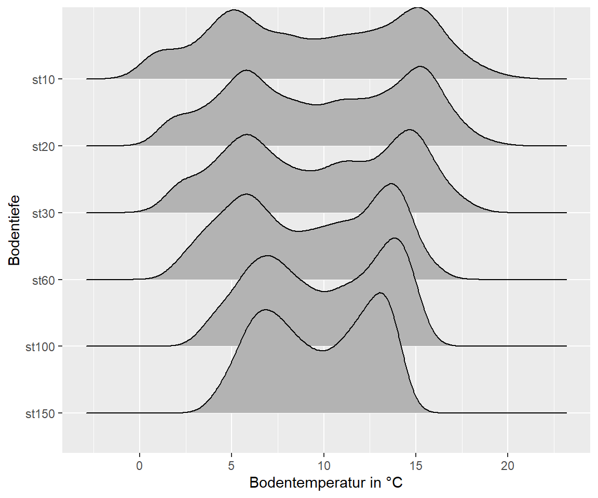
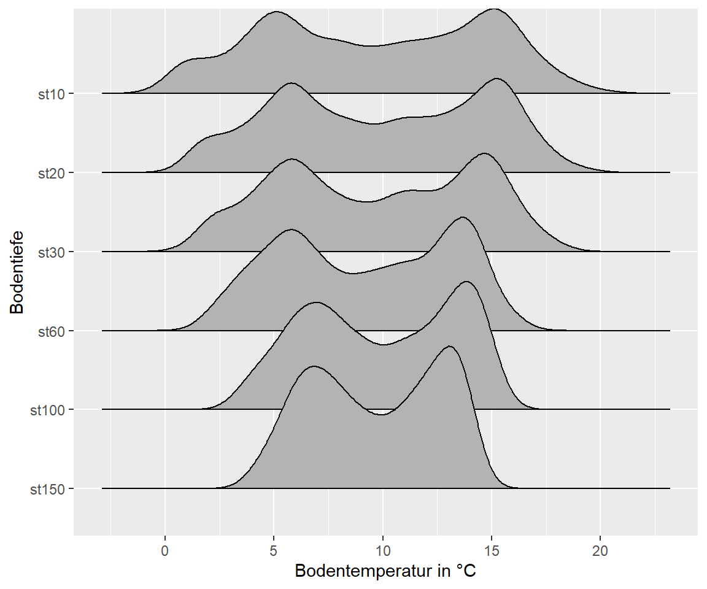
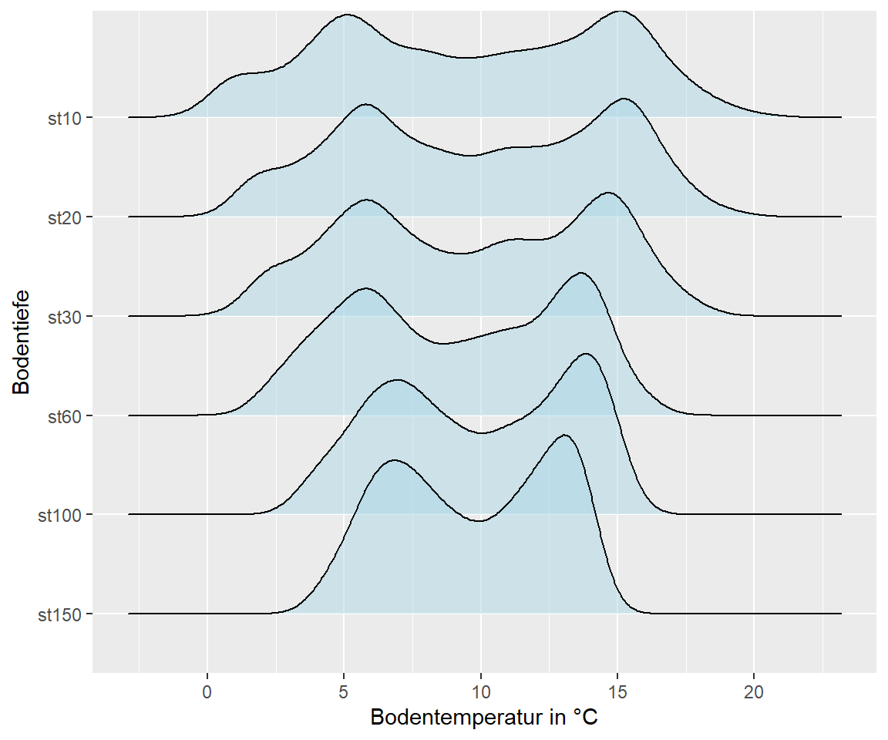
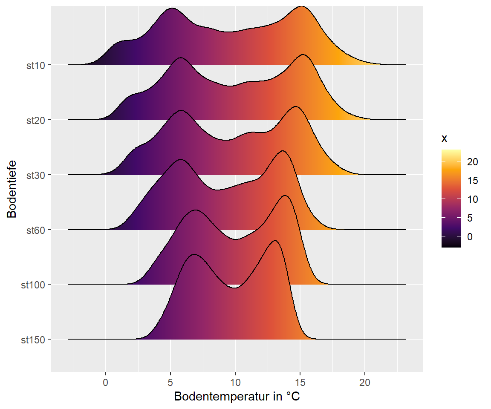
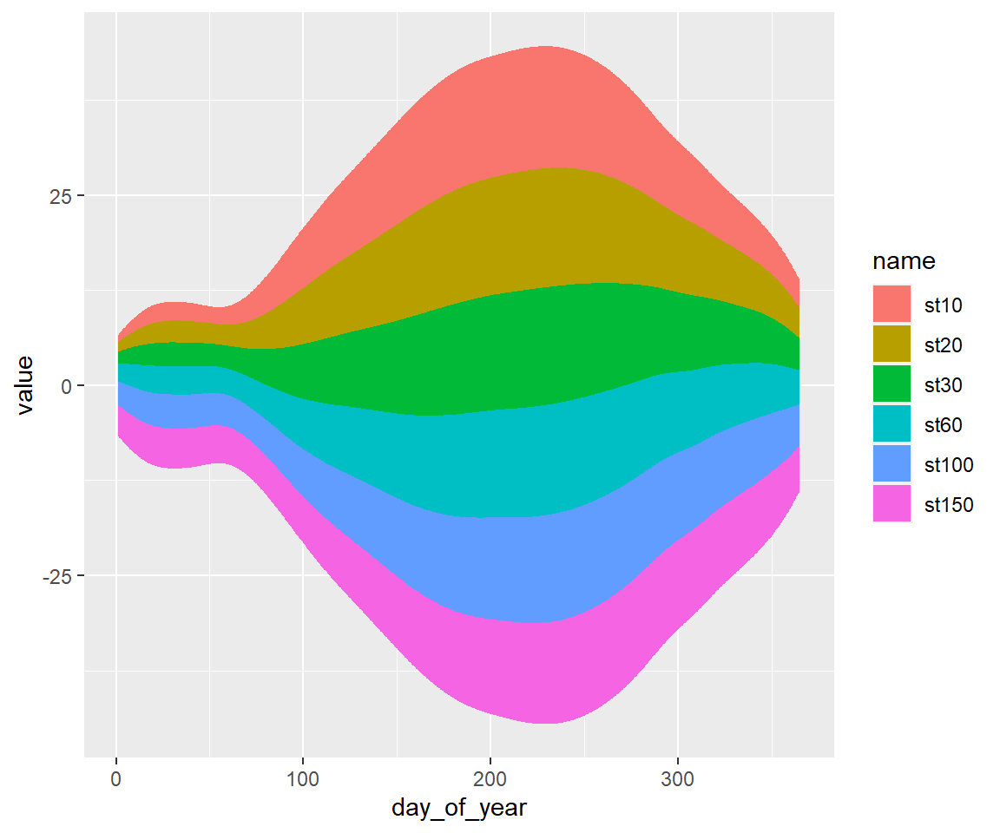
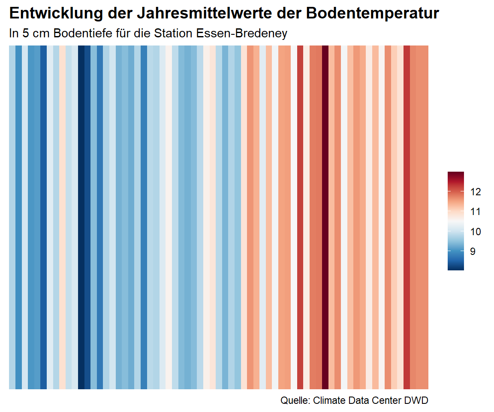

6.7 Formen der Darstellung
6.7.1 Overplotting
Bei mittleren bis großen Datensätzen läuft man Gefahr des “overplottings”. Eine Möglichkeit ist es durch die Form oder Transparenz die Aussagekraft zu erhöhen:
# Example from https://ggplot2-book.org/statistical-summaries.html#overplotting
df <- data.frame(x = rnorm(4000), y = rnorm(4000))
norm <- ggplot(df, aes(x, y)) +
labs(x = NULL, y = NULL)
norm + geom_point()
norm + geom_point(shape = 1) # Hollow circlesnorm + geom_point(shape = ".") # Pixel sizednorm + geom_point(alpha = 0.1) # Pixel sizedHat man sehr großen Daten kann ein 2D Geometrien nützlich sein:
norm + geom_bin2d() + ggtitle("bin2d")
norm + geom_hex() + ggtitle("hex")
norm + geom_hex(bins = 10) + ggtitle("hex (bins = 10)")
norm + geom_density2d() + ggtitle("density2d")
# Für den Speicherkoog könnte ein overlay wie folgt aussehen:
koog_day %>%
ggplot(aes(wt, eh60a)) +
geom_point(alpha = 0.1) +
geom_density_2d(bins = 10) +
my_theme6.7.2 Positions Argument
Jedes geom hat auch ein Argument zur Auskunft der Position. Schauen wir es uns am Beispiel eines Säulendiagrams an:
base <- ggplot(mpg, aes(cty, fill = class)) +
xlab(NULL) + ylab(NULL) + theme(legend.position = "none")
base + geom_bar() + ggtitle("stack") # the default
base + geom_bar(position = "dodge") + ggtitle("dodge")
base + geom_bar(position = "fill") + ggtitle("fill")base + geom_bar(position = "identity") + ggtitle("identity") +
theme(panel.background = element_rect(fill = "gray"))
Für Punkte gibt es nochmal speziellere Argumente, identity, nudge, jitter.
base <- ggplot(mpg, aes(displ, cty, color = class)) +
xlab(NULL) + ylab(NULL) + theme(legend.position = "none")
base + geom_point() + ggtitle("identity") # the default
base + geom_point(position = position_nudge(x = 2, y = -2)) + ggtitle("nudge")
base + geom_point(position = "jitter") + ggtitle("jitter")
position_nudge() verschiebt unsere Daten um -2 auf der y Achse und +2 auf der x Achse.
6.7.3 Inspirationen
Die folgenden Abbildungen spiegeln alle dasselbe wieder, unterscheiden sich jedoch durch das geom in der Darstellung:
base <- ggplot(mpg, aes(fill = class)) +
labs(x = NULL, y = NULL) +
theme(legend.position = "none")
base + geom_histogram(aes(x = displ)) + ggtitle("histogram")
base + geom_density(aes(x = displ)) + ggtitle("density")
base + geom_freqpoly(aes(x = displ)) + ggtitle("freqpoly")base + geom_boxplot(aes(x = class, y = displ)) + ggtitle("boxplot")
base + geom_violin(aes(x = class, y = displ)) + ggtitle("violin")
base + geom_dotplot(aes(x = class), stackratio = 0.35) + ggtitle("dotplot")
6.7.3.1 Linien
Für quasi kontinuierliche Darstellungen eignen sich Liniendiagramme:
koog_day %>%
filter(daily > "2011-01-01" & daily < "2011-12-31") %>%
ggplot(aes(daily, st10)) +
geom_line()
6.7.3.2 Boxplot
Man kann die monatliche Variabilität aber auch als boxplot darstellen. Dazu setzen wir in dem Aufruf geom_boxplot(aes(group = month)) um ggplot mitzuteilen, dass jede einzelne Box für den individuellen Monat in 2011 gezeigt werden soll.
koog_day %>%
filter(daily > "2011-01-01" & daily < "2011-12-31") %>%
ggplot(aes(daily, st10)) +
geom_boxplot(aes(group = month))
Fehlt dieser Aufruf macht die Darstellung weniger Sinn üòé
koog_day %>%
filter(daily > "2011-01-01" & daily < "2011-12-31") %>%
ggplot(aes(daily, st10)) +
geom_boxplot()
6.7.3.3 Ridgeline plots
Auf der X Achse wird der numerische Wert geplottet und auf der Y Achse die Faktor Variable (in unserem Fall die Bodentemperatur in den Tiefen)
p <- koog_day %>%
pivot_longer(contains("st")) %>%
mutate(name = factor(name, levels = c("st10","st20","st30","st60","st100","st150"))) %>%
ggplot(aes(x = value, y = fct_rev(name))) +
labs(
x = "Bodentemperatur in °C",
y = "Bodentiefe"
)
# Offene Dichteverteilung der Daten
p + geom_density_ridges()
# Geschlossene Dichteverteilung der Daten
p + geom_density_ridges2()
# Beschränke die Darstellung auf min und max der Tiefe
p + geom_density_ridges(rel_min_height = 0.01)
# Mit einheitlicher Farbe
p + geom_density_ridges(fill = "lightblue", alpha = 0.5)
# Farbe nach Gruppen
koog_day %>%
pivot_longer(contains("st")) %>%
mutate(name = factor(name, levels = c("st10","st20","st30","st60","st100","st150"))) %>%
ggplot(aes(x = value, y = fct_rev(name), fill = name)) +
labs(
x = "Bodentemperatur in °C",
y = "Bodentiefe"
) +
geom_density_ridges()
# Farbe nach Gradient
koog_day %>%
pivot_longer(contains("st")) %>%
mutate(name = factor(name, levels = c("st10","st20","st30","st60","st100","st150"))) %>%
ggplot(aes(x = value, y = fct_rev(name), fill = stat(x))) +
labs(
x = "Bodentemperatur in °C",
y = "Bodentiefe"
) +
geom_density_ridges_gradient() +
scale_fill_viridis_c(option = "B")
6.7.3.4 Streamline plots
Streamline plots sind sinnvoll um Trends über die Zeit darzustellen oder
# Daten Aufbereitung
stream <- koog_day %>%
mutate(day_of_year = yday(daily)) %>%
filter(year == "2011") %>%
pivot_longer(contains("st")) %>%
mutate(name = factor(name, levels = c("st10","st20","st30","st60","st100","st150")))
p <- stream %>%
ggplot(aes(x = day_of_year, y = value, fill = name))
# Default stream plot
p + geom_stream()
6.7.3.5 Lollipop charts
Diese Abbildung eignet sich für numerische Variablen die gegen eine kategorische geplottet werden sollen:
# Data preparation
lolli <- koog_day %>%
filter(daily < "2010-12-31") %>%
summarise_at(vars(contains("eh")), mean, na.rm = T) %>%
pivot_longer(everything())
col_names <- rev(c("eh10a","eh10b","eh10c",
"eh20a","eh20b","eh20c",
"eh30a","eh30b","eh30c",
"eh60a","eh60b","eh60c",
"eh100a","eh100b","eh100c",
"eh150a","eh150b","eh150c"))
# Plot the data
p <- lolli %>%
ggplot(aes(value, fct_relevel(name, col_names))) + # order the electrode names by the col_names vector
geom_point() +
geom_segment(aes(x = -300, xend = value, y = name, yend = name))
p
# Customization
p <- p + geom_point(shape = 21, size = 8, fill = "white")
p
# Mithilfe von geom_text kann auch der Wert in den Kreis geplottet werden
p + geom_text(aes(label = round(value, 0)), size = 2)
# Mit fct_relevel aus dem forcats package kann nach Größe sortiert werden
lolli %>%
ggplot(aes(value, fct_reorder(name, value))) + # order the electrode names by the col_names vector
geom_point(shape = 21, size = 8, fill = "white") +
geom_segment(aes(x = -300, xend = value, y = name, yend = name))
Speziell das sortieren von kategorischen Variablen ist häufig wichtig, um sofort einzusehen das der höchste EH die Elektrode eh20c aufweist und der niedrigste Wert bei eh150b gemessen wurde.
6.7.3.6 Windrose (radar chart)
üîç openair package
In der Meteorologie werden auch Windrosen verwendet, um neben der Windrichtung auch die Geschwindigkeit zu codieren mit der im jährlichen Mittel der Wind weht. Das openair:: package bietet Möglichkeiten dies umzusetzen. Alles was man braucht ist ein data frame mit einer Variable für die WIndrichtung (default wd) und der Windgeschwindigkeit (default ws). Durch das Argument type = kann man ähnlich wie beim facetting angeben, wie die Daten aufgebrochen werden sollen (bspw. pro Jahr):
# Restructure data
koog_wind <- koog_day %>%
select(ws, wd, year) %>%
filter(year < 2020 & year > 2011)
# Plot the data
koog_wind %>%
windRose(ws = "ws", wd = "wd")
6.7.3.7 Treemaps
Treemaps visualisieren Beobachtungen durch Kacheln, wobei die Fläche der Kachel proportional zu dem Wert der Variable ist. Das package treemapify:: kann dazu genutzt werden:
# Create test data
df <- tibble(
group = paste("Group", 1:9),
subgroup = c("A", "C", "B", "A", "A","C", "C", "B", "B"),
value = c(7, 25, 50, 5, 16,18, 30, 12, 41)
)
# Plot the data
df %>%
ggplot(aes(area = value, fill = group)) +
treemapify::geom_treemap()
# Fülle mit numerischen Daten
df %>%
ggplot(aes(area = value, fill = value)) +
treemapify::geom_treemap() +
scale_fill_viridis_c()
# Label den plot mit Gruppenname und Wert
ggplot(df, aes(area = value, fill = value, label = paste(group, value, sep = "\n"))) +
geom_treemap() +
geom_treemap_text(colour = c(rep("white", 2),
1, rep("white", 6)),
place = "centre", size = 15) +
scale_fill_viridis_c()
6.7.3.8 Contour plots
üîç https://fishandwhistle.net/post/2019/depth-time-heatmaps/
üîç https://theoceancode.netlify.app/post/odv_figures/
Die Messtiefen im Speicherkoog sind nahe an der Bodenoberfläche in einer höheren Auflösung und es kann auch zu Messausfällen kommen. Lücken in den Datensätzen vermitteln deswegen nicht unbedingt das räumliche und zeitliche Kontinuum, welches in naturwissenschaftlichen Datensätzen zu finden ist. Eine Möglichkeit dies wiederzuspiegeln bieten contour plots / heatmaps / Rasterabbildungen oder weitere Synonyme.
# Verlauf aller Elektroden
koog_day %>%
pivot_longer(cols = contains("eh")) %>%
filter(year == "2012") %>%
ggplot(aes(daily, value, color = name, group = name)) +
geom_line()
# Mittelwert bilden pro Tiefe
koog_day <- koog_day %>%
rowwise() %>% # führe die folgende Berechnung Zeilenweise durch
mutate(eh10_mean = mean(c(eh10a, eh10b, eh10c), na.rm = T),
eh20_mean = mean(c(eh20a, eh20b, eh20c), na.rm = T),
eh30_mean = mean(c(eh30a, eh30b, eh30c), na.rm = T),
eh60_mean = mean(c(eh60a, eh60b, eh60c), na.rm = T),
eh100_mean = mean(c(eh100a, eh100b, eh100c), na.rm = T),
eh150_mean = mean(c(eh150a, eh150b, eh150c), na.rm = T))
# Verlauf der Mittelwerte
koog_day %>%
pivot_longer(contains("eh") & contains("mean")) %>%
filter(year == "2012") %>%
ggplot(aes(daily, value, color = name, group = name)) +
geom_line()
Mit den Mittelwerten sieht es schon etwas aufgeräumter aus, wir sind aber immer noch nicht am Ziel. Unser Ziel ist es zum Erstellen der Konturabbildung die fehlenden Werte “aufzufüllen”. Räumlich also alle Werte die zwischen den Elektroden 10 und 20 liegen (also hypothetische Messwerte in 11, 12, 13, … cm Tiefe) und zeitlich die NAs im Dezember 2012.
üö® Die interpolierten Messwerte sollten nicht (!) f√ºr weitere statistische Verrechnungen genutzt werden, da EH Messungen kleinr√§umig sehr variabel sind und wir keine Informationen √ºber den Bereich zwischen den Messtiefen geben k√∂nnen. Nichtsdestotrotz sind Konturabbildungen ein tolles Tool um Daten ansprechend zu visualisieren und auch Trends hervorzuheben.
# create data frame for interpolating
# The column names should be date, depth, value (e.g. redox data)
# NA, NaN, Inf values must be removed from the data frames
koog_contour <- koog_day %>%
# separate by "_" and remove "eh"
pivot_longer(contains("eh") & contains("mean"), names_to = c("depth", "mean"), names_sep = "_", names_prefix = "eh") %>%
filter(year == "2012") %>%
mutate(date = daily) %>%
select(date, depth, value) %>%
# remove NaN values from the data to NA values
mutate(value = na_if(value, "NaN")) %>%
# remove all rows that contain a missing value, otherwise an error occurs during interpolation
drop_na()
# Write function to interpolate between depths
estimate_value_by_date <- function(target_date, target_depth) {
data_for_date <- koog_contour %>%
filter(date == target_date) %>%
arrange(depth)
# approx() is one way to do a linear interpolation
approx(data_for_date$depth, data_for_date$value, xout = target_depth)$y
}
# Test the function for four arbitraily set depths
estimate_value_by_date(ymd("2012-05-13"), c(0, 1, 1.5, 10, 21))
## [1] NA NA NA 547.1413 643.7689
value_interp_depth <- crossing(
# the same dates as koog_contour
tibble(date = unique(koog_contour$date)),
# depths can now be any value
tibble(depth = seq(10, 150, length.out = 100)) # The depths must be specified according to the data
) %>%
group_by(date) %>%
dplyr::mutate(value = estimate_value_by_date(date[1], depth))
estimate_value_by_depth <- function(target_depth, target_date) {
data_for_depth <- value_interp_depth %>%
filter(depth == target_depth) %>%
arrange(date)
approx(data_for_depth$date, data_for_depth$value, xout = target_date)$y
}
estimate_value_by_depth(
target_depth = c(10,12),
target_date = seq(ymd("2012-05-12"), ymd("2012-05-15"), by = 1)
)
## [1] 549.1958 547.1413 542.2649 550.9811
value_raster <- crossing(
# dates can now be any value
tibble(date = seq(ymd("2012-01-01"), ymd("2012-12-31"), by = 1)),
# depths must be the same as in temp_interp_depth
tibble(depth = unique(value_interp_depth$depth))
) %>%
group_by(depth) %>%
dplyr::mutate(value = estimate_value_by_depth(depth[1], date))
# Create a color palette
colours <- c("#feb483", "#d31f2a", "#ffc000", "#27ab19", "#0db5e6", "#7139fe", "#d16cfa")
p1 <- value_raster %>%
ggplot(aes(date, depth, fill = value)) +
geom_raster() +
geom_contour(aes(z = value), breaks = 300, colour = "black") + # Label EH >= 300 mV with black
coord_cartesian(ylim = c(150, 0), expand = 0) + # expand = 0 setzt die Grenze der Abbildung direkt an den Rand
scale_fill_gradientn(colours = rev(colours),
name = expression(E[H]),
breaks = seq(from = -400, to = 800, by = 200)) +
scale_x_date(date_breaks = "1 month", date_labels = "%m", minor_breaks = "1 month") +
labs(
title = "Konturabbildung der Redoxpotenziale",
subtitle = "Speicherkoog für das Jahr 2012",
caption = "*Schwarze Linie trennt oxidierende (> 300 mV)\n und reduzierende Bedingungen",
x = "Monat des Jahres",
y = expression(paste(E[H], " (mV)"))
) +
my_theme
p2 <- koog_day %>%
pivot_longer(contains("eh") & contains("mean")) %>%
filter(year == "2012") %>%
ggplot(aes(daily, value, color = name)) +
geom_line() +
scale_x_date(date_breaks = "1 month", date_labels = "%m", minor_breaks = "1 month") +
labs(
title = "Verlauf der Redoxpotenziale",
subtitle = "Speicherkoog für das Jahr 2012",
x = "Monat des Jahres",
y = expression(paste(E[H], " (mV)"))
) +
my_theme
p3 <- koog_day %>%
filter(year == "2012") %>%
ggplot(aes(daily, wt_2)) +
geom_line() +
scale_x_date(date_breaks = "1 month", date_labels = "%m", minor_breaks = "1 month") +
labs(
x = "Monat des Jahres",
y = "Grundwasserflurabstand\n(cm u. GOK)"
) +
my_theme
p1 / p3 
ggsave("images/results/new_school.png", height = 6, width = 6)
p2 / p3
ggsave("images/results/old_school.png", height = 6, width = 6)6.7.3.9 Warming stripes
üîç https://dominicroye.github.io/en/2018/how-to-create-warming-stripes-in-r/
Warming stripes haben in letzter Zeit größere Beliebtheit bekommen, um den Anstieg der globalen Durchschnittstemperatur zu visualisieren. Quasi erfunden wurden sie von Ed Hawkins:
Visualising global temperature change since records began in 1850. Versions for USA, central England & Toronto available too: https://t.co/H5Hv9YgZ7v pic.twitter.com/YMzdySrr3A
— Ed Hawkins (@ed_hawkins) May 23, 2018
Als Beispieldatensatz schauen wir uns die Bodentemperatur in 5 cm Tiefe für eine Messstation des DWD in NRW an. Es handelt sich um die Station Essen-Bredeney.
# read data for the 5 cm soil depth
dh_005 <- readr::read_delim("data/data_TE05_MN002.csv", delim = ",")
# Define special theme for the plot
theme_strip <- theme_minimal()+
theme(axis.text.y = element_blank(),
axis.line.y = element_blank(),
axis.title = element_blank(),
panel.grid.major = element_blank(),
legend.title = element_blank(),
axis.text.x = element_text(vjust = 3),
panel.grid.minor = element_blank(),
plot.title = element_text(size = 14, face = "bold")
)
# Define colors to use for the plot
col_strip <- brewer.pal(11, "RdBu")
# For the final graphic we use the geometry geom_tile( ). Since the data does not have a specific value for the Y axis, we need a dummy value, here I used 1. Also, I adjust the width of the color bar in the legend.
dh_005 %>%
ggplot(aes(x = as.Date(year), y = 1, fill = st)) +
geom_tile() +
scale_x_date(date_breaks = "5 years",
date_labels = "%Y",
expand = c(0, 0)) +
scale_y_continuous(expand = c(0, 0)) +
scale_fill_gradientn(colors = rev(col_strip)) +
guides(fill = guide_colorbar(barwidth = 1)) +
labs(
title = "Entwicklung der Jahresmittelwerte der Bodentemperatur",
subtitle = "In 5 cm Bodentiefe für die Station Essen-Bredeney",
caption = "Quelle: Climate Data Center DWD",
y = NULL) +
theme_strip